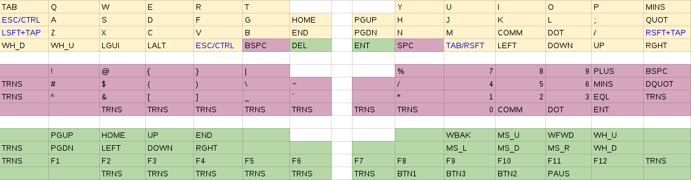

Hand wired 54key full split mechanical keyboard
To cut a long story short, I started feeling
pain in my wrists and shoulders in Dec 2014. I did some research into
ergonomic keyboards, bought a Kinesis Freestyle, got sucked into the
mechanical keyboard scene, hand wired a test
8key keyboard from switch
tester, sourced and hand wired an
Atreus, ordered an Infinity
Ergodox but the wait and delays were killing me, so I designed and built my
own, codenamed blackhawk.
High resolution photos »
Design goals
- Fully programmable - multi-layer keymaps, mouse keys, oneshot modifiers, macros, ...
- Full split with laptop wide separation - most comfortable hand positioning I've found
- Non-staggered columns - human fingers don't move diagonally
- Staggered rows - human fingers have different lengths
- Just enough keys you can reach - no stretching, no hand movement
- Multiple thumb keys - pity to waste two thumbs on just one key
- Tactile mechanical switches - once you go mechanical, you can't go back
- Full hand with integrated wrist rests - mobility and tenting
- Small, minimal and compact - mobility
Keymap layout

Parts
- Gateron brown switches
- Teensy 2.0 micro-controller
- USB type-c breakout board
- USB type-c to USB A short coiled cable
- Interconnect 11 conductor cable
- Vortex PBT cherry keycaps
- Grafiti skin surface slim wrist rest
- Laser cut transparent gray acrylic 3mm 5 layer sandwitch case
- 3mm hex bolts and nuts
Inspiration and thanks
- My wife - for putting up with me and my new obsession
- Matt3o - for the excellent tutorials
- TMK - for the amazingly powerful open source keyboard firmware
- Suka - for the inspiring builds
- Technomancy - for the Atreus
- Jacobolus - for the great riff designs
- Lister - for the sandwitch plate case design
- Ponoko - for great service and customer support
- Massdrop - for taking so long with the Infinity Ergodox
- Geekhack and Deskthority communities